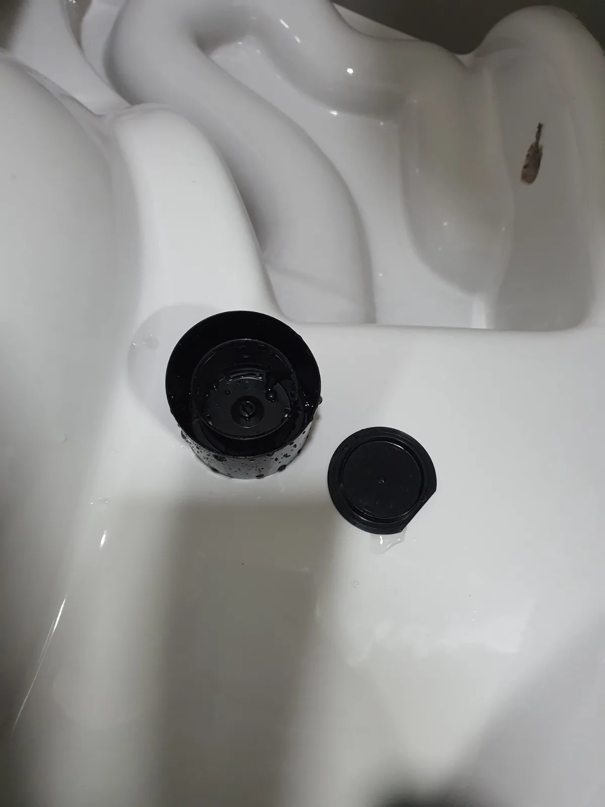

관악구 봉천동 변기막힘, 현장 도착 후 진단
관악구 봉천동 오피스텔에서 변기에 이물질이 들어갔다는 설명을 듣고 방문했습니다. 저희는 우선 변기를 설치된 상태로 두고 이물질을 제거할 수 있는지 확인했습니다.
관통기와 석션을 차례로 사용했지만 물체는 빠지지 않았습니다. 두 가지 방법으로 해결되지 않아, 변기를 탈거하고 하부 배출구 쪽에서 접근하기로 했습니다.
탈거가 필요하다는 말씀에 고객님께서는 재설치 상태를 걱정하셨습니다. 한 번 뜯었다가 다시 붙이면 마감이 보기 싫어지거나 변기가 불안정해지는 것은 아닌지 염려하셨습니다. 막힌 것도 불편하지만, 수리하고 난 뒤의 모습까지 신경 쓰이셨던 겁니다.
1단계: 증상 확인과 필요한 장비 작업
먼저 관통기로 이물질 제거를 시도하고, 이어 석션으로 흡입 작업을 진행했습니다. 두 작업으로도 빠지지 않았기 때문에 같은 방법을 반복하기보다 접근 방향을 바꿀 필요가 있었습니다.
고객님께 탈거가 필요한 이유와 재설치 과정을 설명드렸습니다. 변기를 분리해 이물질을 제거한 뒤 다시 부착하고, 걱정하시는 바닥 접합부도 백시멘트로 깔끔하게 마감해드린다고 안내했습니다.
변기를 뜯어놓고 막힘만 해결하는 것으로 끝나는 작업이 아니었습니다. 저희가 재설치와 마감까지 맡아 진행한다는 점을 말씀드려 안심하실 수 있도록 하고, 차분하게 변기를 분리했습니다.

2단계: 원인 구간 처리와 정상 작동 확인
탈거한 변기의 하부 배출구에 접근해 에어건으로 이물질 제거 작업을 진행했습니다. 설치된 상태에서는 빠지지 않던 물체를 꺼내놓고 보니, 작은 플라스틱 용기와 뚜껑 세트처럼 보였습니다. 하나만 들어가도 골치 아픈데, 이번에는 세트로 들어가 자리를 잡고 있었습니다.
이물질을 제거한 뒤에는 변기를 제자리에 다시 설치했습니다. 고객님께서 재부착 상태를 걱정하셨던 만큼 설치와 마감까지 세심하게 진행했습니다.
변기 하단과 바닥이 만나는 부분을 백시멘트로 마감하고, 외곽을 따라 마감선을 다듬었습니다. 주변 타일에 번진 부분도 정리해 접합부가 단정하게 보이도록 마무리했습니다. 처음 말씀드린 대로, 이물질 제거부터 깔끔한 재설치까지 이어서 진행했습니다.

작업 결과와 재발 방지 안내
관통기와 석션으로 해결되지 않았던 봉천동 변기막힘을 탈거 후 이물질 제거로 해결했습니다. 이어 변기 재부착과 백시멘트 마감까지 완료했습니다. 이번 현장은 막힘의 원인을 제거하는 것과 함께, 고객님이 걱정하셨던 수리 후 모습까지 챙기는 것이 중요했습니다.
변기에 용기나 뚜껑 같은 물건을 떨어뜨렸다면 물을 반복해서 내리거나 도구로 깊이 밀어 넣지 않는 것이 좋습니다. 들어간 물건의 종류를 알고 계시면 상담할 때 알려주세요. 현장에 맞는 제거 방법을 판단하는 데 도움이 됩니다. 작은 욕실용품은 변기 안으로 떨어지지 않는 위치에 보관하는 편이 좋습니다.
신라건축설비는 관악구를 비롯한 서울·경기 지역의 변기막힘에 대응합니다. 관통·석션으로 해결할 수 있는지 먼저 살피고, 탈거가 필요한 현장에서는 이물질 제거부터 재설치와 마감까지 직접 진행합니다. 고객님이 다시 편하게 사용하실 수 있도록 마무리까지 챙기겠습니다.
최종 조치: 변기를 탈거하고 하부 배출구 쪽에서 에어건 작업으로 내부 이물질을 제거했습니다. 이후 변기를 제자리에 재설치하고 바닥 접합부를 백시멘트로 깔끔하게 마감했습니다.
현장 방문 전 확인하는 비용과 작업 범위
신라건축설비는 현장 증상과 배관 구조를 확인한 뒤 필요한 작업과 예상 비용을 안내합니다. 단순 관통으로 해결되는지, 배관내시경·석션·고압세척 또는 변기 탈거가 필요한지는 현장 상태에 따라 달라집니다. 출장비와 야간 작업비, 추가 장비 비용이 발생할 수 있는 경우 작업 전에 먼저 설명하고 동의를 받은 범위에서 진행합니다.
업체를 선택할 때 확인할 사항
무조건적인 ‘0원’ 표현보다 실제 작업 범위, 추가 비용 조건, 사용 장비와 사후 대응 기준을 확인하는 것이 중요합니다. 해결되지 않았을 때의 비용 기준과 작업 후 동일 증상 발생 시 점검 범위를 사전에 문의해두면 불필요한 분쟁을 줄일 수 있습니다.
관악구 변기막힘 자주 묻는 질문
변기막힘은 왜 반복되나요?
관악구 봉천동 현장처럼 변기에 이물질이 들어간 뒤 물이 원활하게 내려가지 않았습니다. 관통기와 석션으로 제거를 시도했지만 이물질이 빠지지 않아 변기를 탈거해야 하는 상황이었습니다. 증상은 원인이 현장마다 다를 수 있습니다. 변기 내부 이물질뿐 아니라 하부 오수관 막힘이나 배관 상태 때문에 반복될 수 있습니다. 같은 변기막힘이 재발하면 막힌 위치와 원인을 다시 확인하는 것이 중요합니다.
변기 물이 안 내려가거나 역류하면 변기뚫는업체를 불러야 하나요?
물이 천천히 내려가거나 수위가 차오르고 변기역류가 반복되면 단순 뚫어뻥보다 전문 장비 점검이 필요한 경우가 있습니다. 현장에서는 증상과 배관 구조를 먼저 확인합니다.
변기 이물질 막힘은 변기를 탈거해야 하나요?
물티슈·청소포·플라스틱·음식물처럼 변기 트랩에 걸린 이물질은 위치에 따라 변기 탈거가 필요할 수 있습니다. 무조건 탈거하지 않고 먼저 막힘 위치를 판단합니다.
변기뚫는업체는 어떤 장비로 작업하나요?
현장 상태에 따라 석션, 에어건, 배관내시경, 변기 탈거 등을 사용합니다. 하부 오수관 문제라면 변기만 뚫는 작업보다 배관 구간 확인이 중요합니다.
변기막힘 비용은 어떻게 정해지나요?
단순 관통인지, 이물질 제거와 변기 탈거가 필요한지, 오수관이나 공용배관 작업이 필요한지에 따라 달라집니다. 추가 장비나 작업이 필요하면 진행 전에 범위와 비용을 안내합니다.
변기에서 냄새가 나거나 물이 자주 차오르는 것도 막힘과 관련 있나요?
악취나 수위 이상이 항상 막힘 때문인 것은 아니지만 배수 불량, 오수관 상태, 연결부 문제와 함께 나타날 수 있습니다. 반복되면 현장 점검으로 원인을 구분해야 합니다.
변기막힘 서울·경기 출동지역
신라건축설비는 관악구 봉천동 현장을 포함해 서울 25개 구와 경기도 31개 시·군의 배관 문제를 상담합니다. 현장 거리와 기사 배정 상황에 따라 출동 가능 여부를 먼저 안내드립니다.
서울 전 지역
강남구 · 강동구 · 강북구 · 강서구 · 관악구 · 광진구 · 구로구 · 금천구 · 노원구 · 도봉구 · 동대문구 · 동작구 · 마포구 · 서대문구 · 서초구 · 성동구 · 성북구 · 송파구 · 양천구 · 영등포구 · 용산구 · 은평구 · 종로구 · 중구 · 중랑구
경기도 주요 출동지역
수원시 · 용인시 · 고양시 · 화성시 · 성남시 · 부천시 · 남양주시 · 안산시 · 평택시 · 안양시 · 시흥시 · 파주시 · 김포시 · 의정부시 · 광주시 · 하남시 · 광명시 · 군포시 · 양주시 · 오산시 · 이천시 · 안성시 · 구리시 · 의왕시 · 포천시 · 양평군 · 여주시 · 동두천시 · 과천시 · 가평군 · 연천군